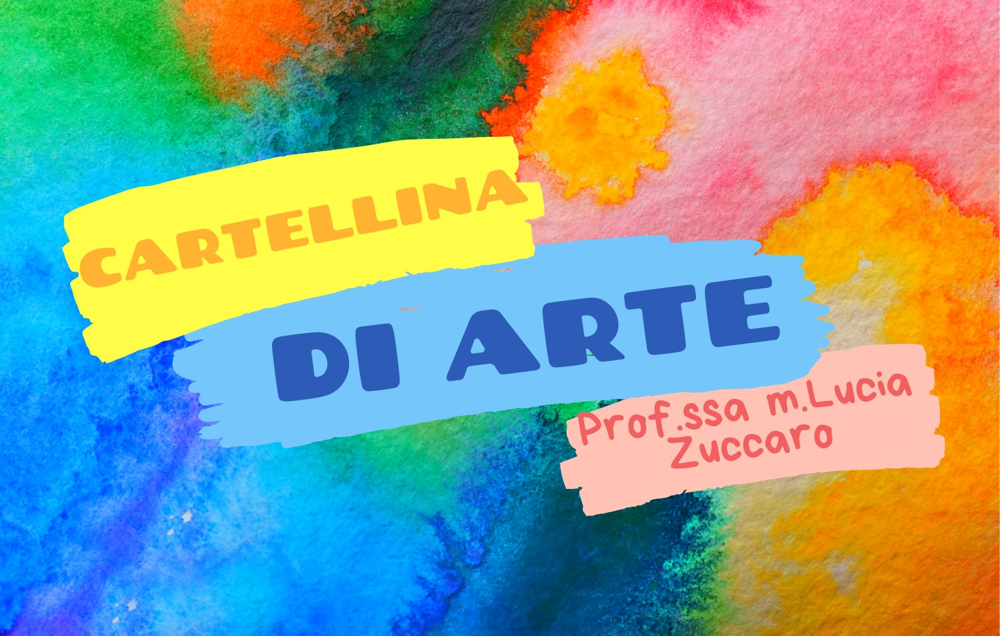
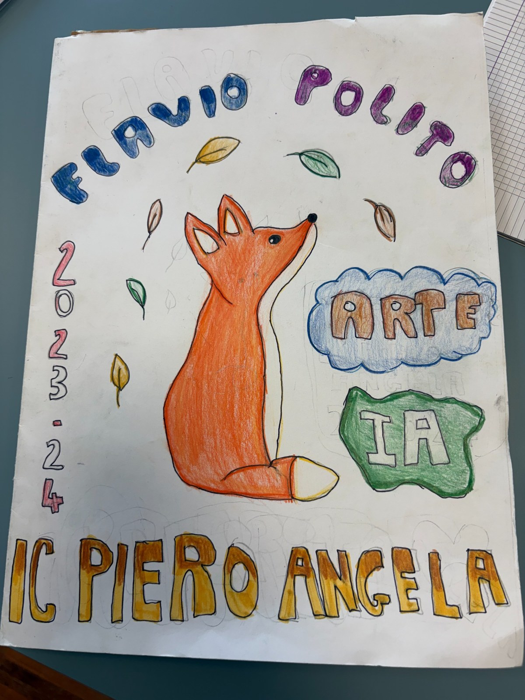
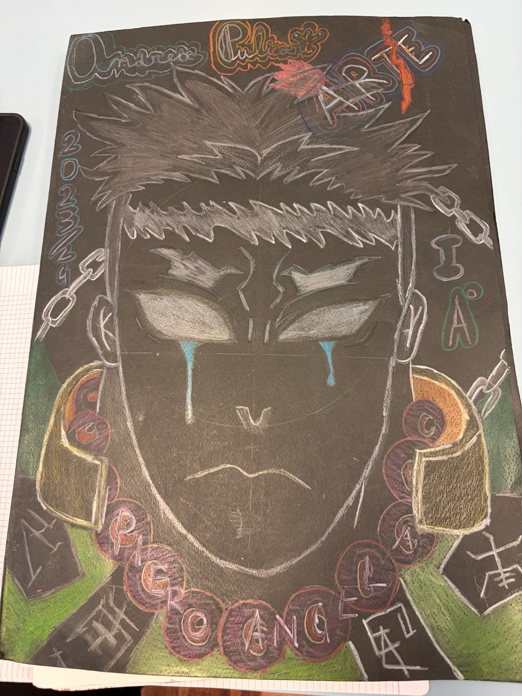
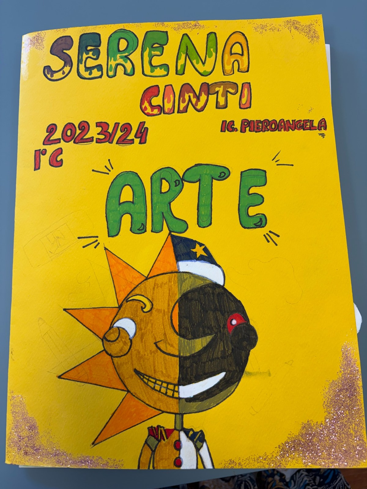

Preparare il cartoncino
Portare un foglio di cartoncino 50 × 70 cm, preferibilmente di colore chiaro per non alterare eccessivamente i colori della decorazione.
Classi prime • inizio anno scolastico
All’inizio della prima media gli studenti realizzano una cartellina personale in cartoncino, piegata, tagliata e decorata. Non è soltanto il primo elaborato di Arte e Immagine: accompagnerà ciascun ragazzo per tutto il triennio, raccogliendo i lavori prodotti negli anni e diventando l’archivio personale da consultare e portare all’esame conclusivo.
La presentazione illustra materiali, misure, piegature, tagli e alcuni esempi di personalizzazione.
Un oggetto utile e personale
La costruzione della cartellina introduce fin dalle prime lezioni alcuni aspetti fondamentali del lavoro in aula: precisione nelle misure, uso corretto di squadrette e forbici, cura dei materiali, progettazione della superficie e organizzazione degli elaborati. La decorazione è libera, ma deve rendere la cartellina immediatamente riconoscibile e funzionale.

Procedimento essenziale
Portare un foglio di cartoncino 50 × 70 cm, preferibilmente di colore chiaro per non alterare eccessivamente i colori della decorazione.
Piegare il cartoncino sul lato lungo, ottenendo un formato doppio di 50 × 35 cm.
Utilizzare squadrette e forbici per eseguire i tagli indicati: 10 cm sul lato da 35 cm e 16 cm sul lato da 50 cm.
Personalizzare liberamente la superficie, mantenendo però chiare e leggibili le informazioni necessarie.
Informazioni indispensabili
La composizione grafica è libera, ma la cartellina deve riportare:
Nelle eventuali fotografie pubblicate sul sito i dati personali degli studenti non saranno visibili.
Alcuni esempi realizzati dagli studenti
Di seguito una selezione di cartelline personalizzate. La griglia è già predisposta per ospitare fino a nove immagini, organizzate su tre colonne, così da poter aggiungere facilmente nuovi esempi nel tempo.


